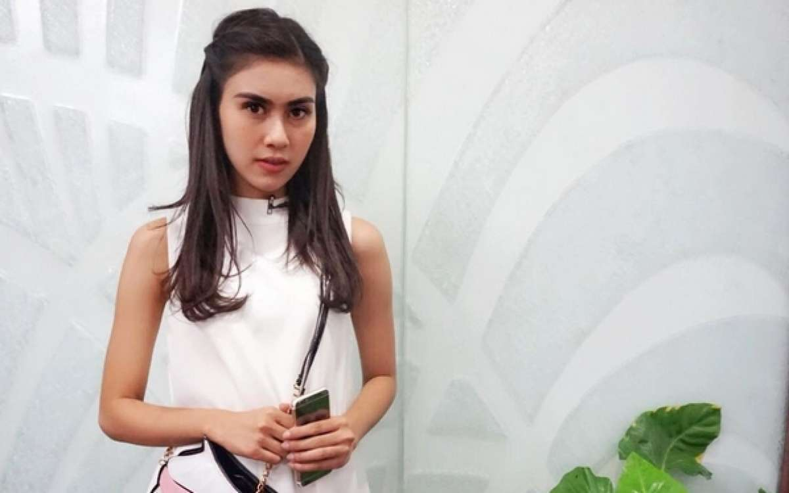

Welcome to the blog of Syahnaz Sadiqah
|
Syahnaz Sadiqah
Nama : Syahnaz Sadiqah Lahir: 30 Oktober 1993 (usia 26 tahun), Bandung Pasangan: Jeje Govinda (m. 2018) Pendidikan: Universitas Katolik Parahyangan Acara TV: Adu Dahsyat Nominasi: Indonesia KCA untuk Aktris Favorit, LAINNYA Saudara kandung: Nisya Ahmad, Raffi Ahmad |

|